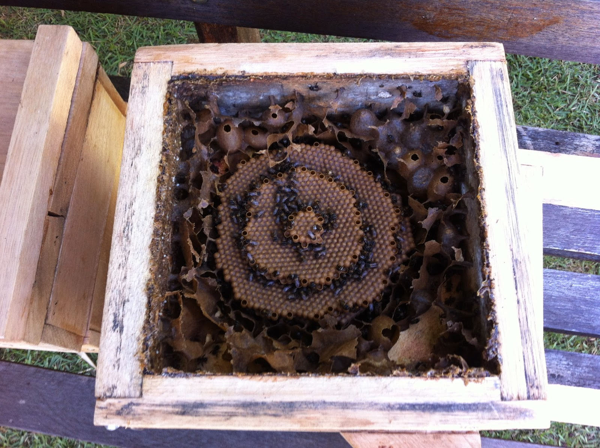
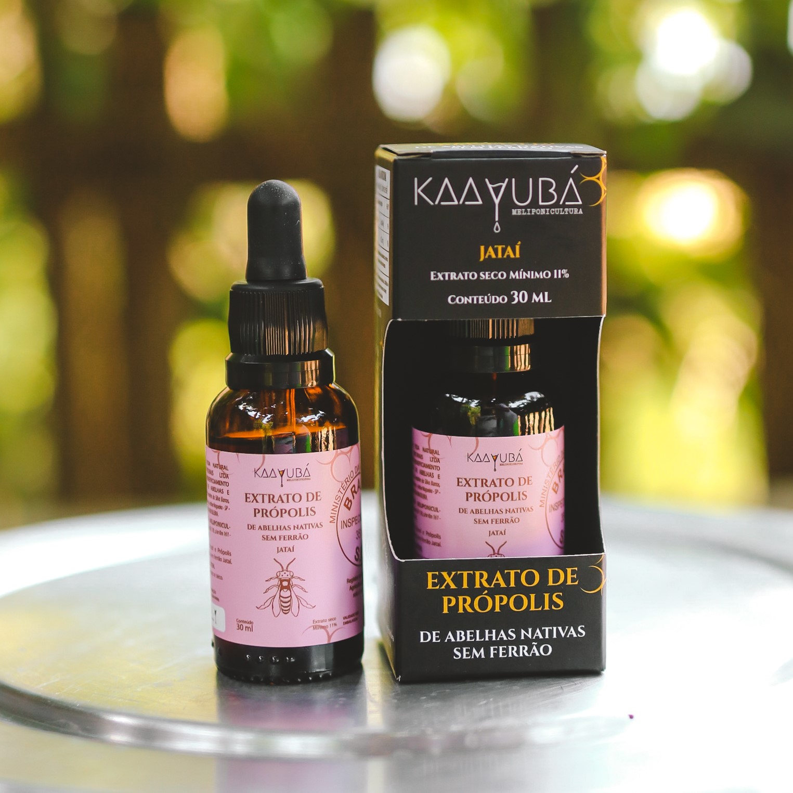

Curiosidades
Nomes populares: Além de Mandaguari Preta, essa abelha também é conhecida como Jataí-preta em
algumas
regiões.

Coméia de Jataí-preta (Mandaguari preta)
Comportamento social: As Mandaguari Pretas apresentam um comportamento social complexo, com divisão
de tarefas entre as operárias e uma comunicação eficiente através de feromônios.
Produtos: Ela produz menos mel que outras abelhas, porém seu mel é muito valorizado para usos
medicinais, além dele ser mais ácido que outros, seus usos medicinais estão muito ligados a
cosméticos e o própolis, que tem uma ação anti-patogênica, também retirado de suas coméias

Produto feito de própolis (Não patrocinado)
Construção do favo: O favo das Mandaguari Pretas é construído de forma vertical, com células
hexagonais para armazenar o mel e o pólen.
Resistência a doenças: Essas abelhas apresentam uma maior resistência a doenças em comparação com as
abelhas africanizadas, o que as torna mais adequadas para a criação em sistemas de produção
orgânica.